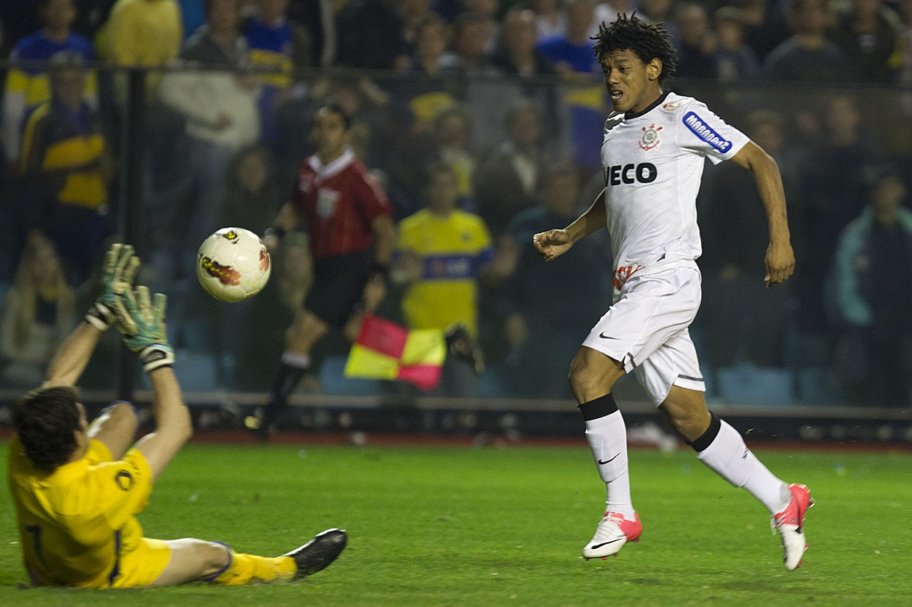
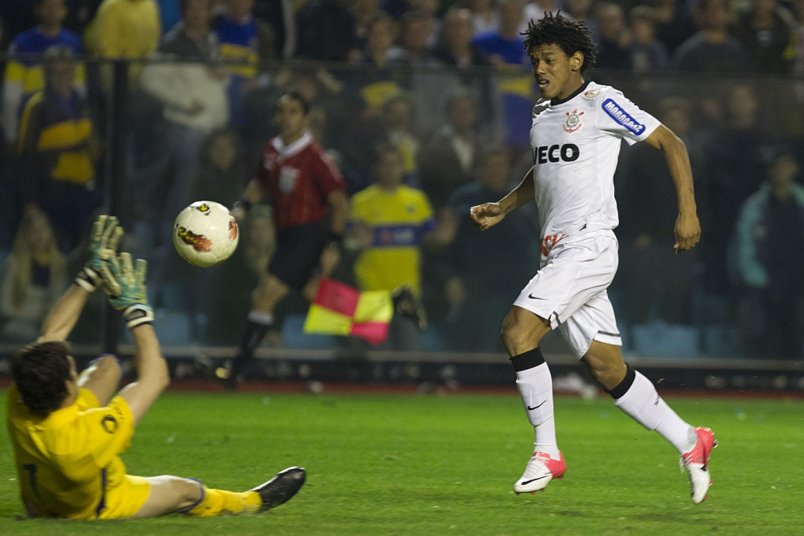
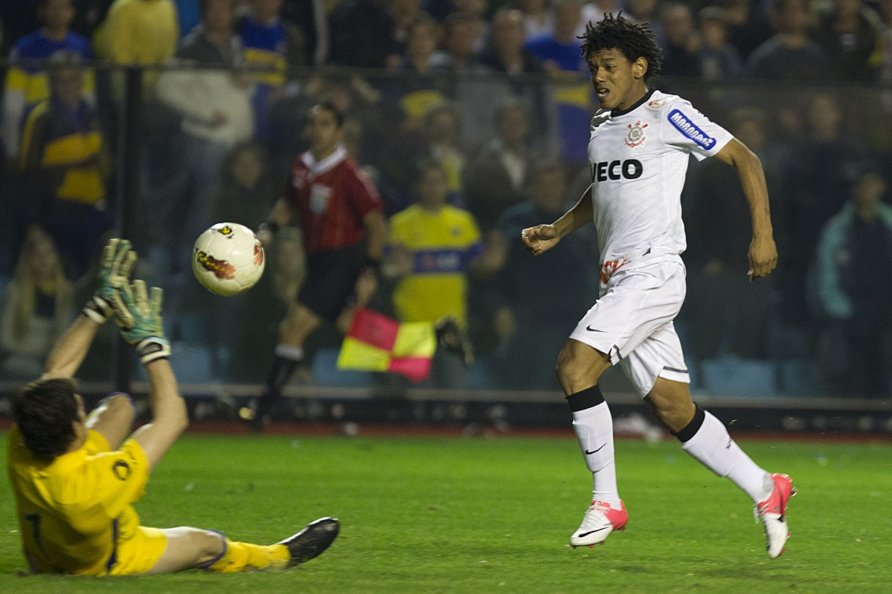

Às 20h30 do dia 1º de setembro, à luz de um lampião, na esquina das ruas José Paulino e Cônego Martins, no bairro do Bom Retiro, o grupo de operários formado por Anselmo Corrêa, Antônio Pereira, Carlos Silva, Joaquim Ambrósio e Raphael Perrone fundaram o Sport Club Corinthians Paulista. Com mais oito rapazes, foi formada a reunião dos primeiros integrantes e sócio fundadores do Timão, que teve seu nome inspirado na equipe inglesa Corinthian Football Club, que fazia excursão pelo Brasil. O presidente escolhido por eles foi o alfaiate Miguel Battaglia, que, já no primeiro momento, afirmou: “O Corinthians vai ser o time do povo e o povo é quem vai fazer o time”. Um terreno alugado na Rua José Paulino foi aplainado, virou campo e foi lá que, já no dia 14 de setembro, o primeiro treino foi realizado diante de uma plateia entusiasmada, que garantiu: “Este veio para ficar!”.
PRINCIPAIS JOGADORES DA HISTÓRIA DO CLUBE
TITULOS MARCANTES
Timão bateu o Boca Juniors por 2 a 0 no Pacaembu, com dois gols de Emerson Sheik. Em um 4 de julho como esta quinta-feira, mas de 2012, o Corinthians conquistava o título inédito da Copa Libertadores sobre o Boca Juniors, com a vitória por 2 a 0, no Pacaembu. Juntamente a esse ano, O Corinthians conquistou seu segundo título no torneio após vencer o Chelsea por 1 a 0 na final no Estádio Internacional de Yokohama no Japão, com direito a gol do atacante Guerrero. Foi a primeira conquista de um clube não europeu desde a edição de 2006.

Por ultimo.. Fotos Marcantes!!!